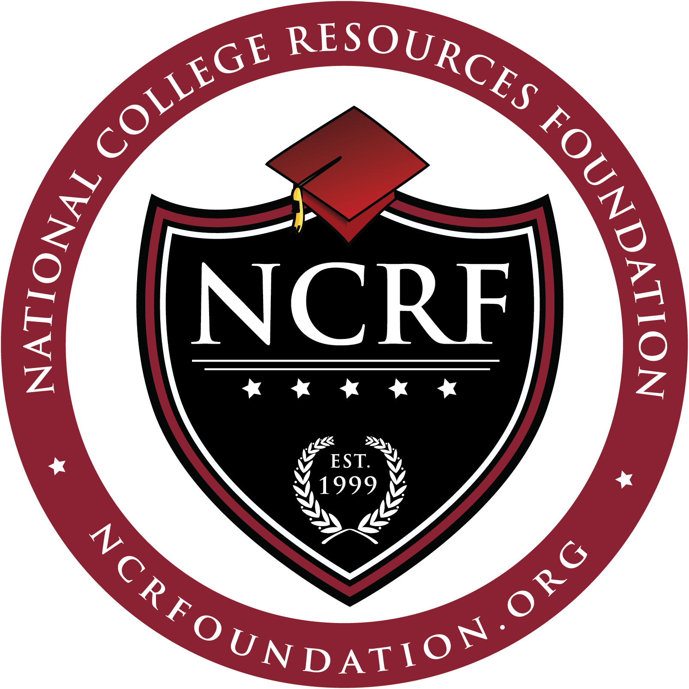
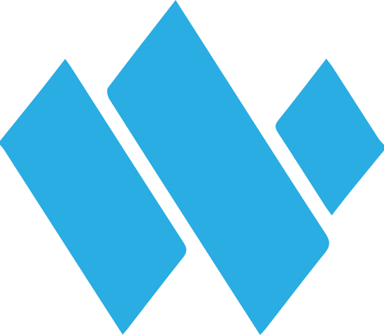
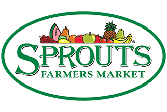

This page shows my work experience background as well as additional projects I have been working on.
Work Experience
-
National College Resource Foundation - Diamond Bar, CA *JULY 2021 - PRESENT 
-
Occupation Title: Site Lead Instructor
- Develop and implement a solid STEM-related curriculum for middle school students.
- Work one-on-one with students who need additional help and giving them different perspectives in problem solving.
- Lead and after-school on site program.
-
Code Ninjas - Ontario, CA *JULY 2021 - PRESENT
-
Occupation Title: Lead Coding Instructor
- Working as a positive team member to design, code, test, report, and debug operations.
- Code games using Javascript, Python, C++, and Unity.
- Assist students in their process of learning and developing a game.
-
Westfall Technik - Riverside, CA *JUNE 2022 - AUGUST 2022 
-
Occupation Title: Operations Intern
- Effectively coordinated daily team meetings using Microsoft Teams.
- Gained experience with maintenance, IT, and Operations departments within the company.
- PowerBI implementation.
Sprouts Farmers Market - Upland, CA *JULY 2016 - JULY 2021 
-
Occupation Title: Grocery Clerk / Courtesy Clerk
- Worked as a friendly and helpful clerk.
- Known for fast and excellent service.
- Remained flexible, adaptable, and punctual.
Personal Projects
Data Engineer Intern @ Aerospace Corporation
*Senior Design Project*
Taking part of a professional set of colleagues as a data engineer
to help develop a web-app that uses features in conjunction to a
Satellite Orbit Analysis Program (SOAP) sponsored by Aerospace Corporation.
Utilizing features to visualize DOP (Dilution of Precision) across the globe.
Dealing with data pipelines to assure the correct data is being processed and
formatted correctly from the API team. Docker, Python, GitHub, Container Technology,
Code Documentation.
Personal Portfolio Website Project
You can find this website here at andrewjarmin.com. Building this website helped me advance my skills in javascript, html, and css. This was my first deployment of a functional and interactive website with the use of libraries such as; npm, jquery, vite, three.js, vscode, github, favicon, etc.